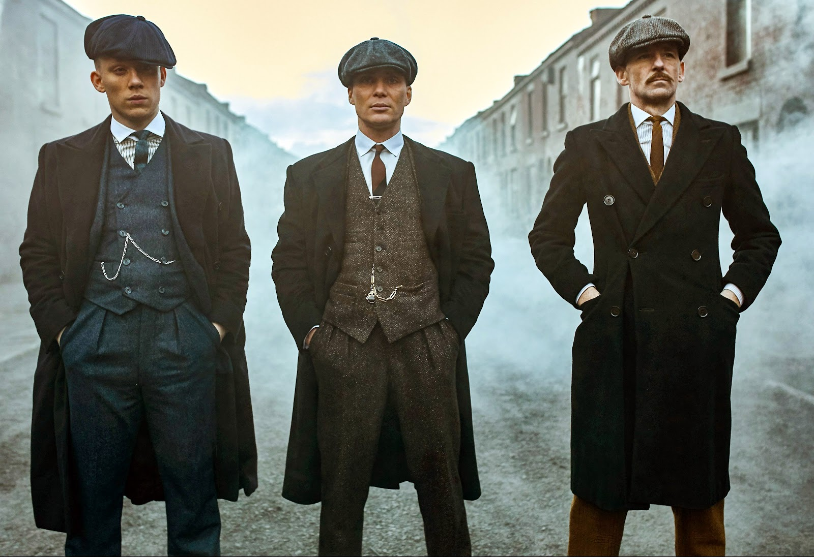

Top Ten Shows
This was the last page I typed up. It's so difficult putting into words what you think, for it to make sense to your reader or maybe bacause I've never done it before. Bloggers they try sha. honeslty
10

This was a really great show, personally Marvel hardly fails to impress me. We got to see different possibilities across multiple timelines with a teamup and badass final fight at the end. Dr Strange's episode definitely my best and the last episode when the Watcher breaks his oath is a close second. Top voice acting and animation. I eargerly await the upcoming season, and I know Marvel will deliver as always.
9
Another Marvel work. This show really brought to light how Loki's character has been misunderstood for a while. Only Loki could fall in love with another version of himself. Lol. Anyway really good show, smooth CGI and I can't wait for the second season.
8
Invincible isn't your convential super hero show. I'm sure anyone who has seen it, got hooked because of how the first episode ended. One thing I love about the show is how realistic the violence is, I get some people can't handle the gore or violence but the show really change my perspective on how super hero shows should be. The show is wriiten pretty well with great morals for an adult show.
7
I wasn't really a fan of shows that are time-consuming scenes not until I watched this series. If na so lawyers dey do e dey interesting o.
I'll never be able to forget the characters, Harvey and Mike complement each other so well through out the series. Each character was cast perfectly in my opinion.
Every single episode keeps you hooked and it never gets boring. The show is really well written and one of the best I've seen.
6
Peaky Blinders is a lot different from other Gangster shows, because there is this kinda professionalism to it. Just a few characters I know that oozes confidence like Thomas Shelby, he always gives off that I've got it covered vibe and trust me, he does have it covered. My favourite character has to be Alfie Solomons, Tom Hardy really nailed it. Amazing cinematography that keeps you interested and on the edge with top class drama.
5

I don't know why most people are complaining about the show being too voilent in recent seasons with so many gun scenes, me I like voilence. What did you expect? lol, these guys were using military and police forces to play. I really like how vulnerable Professor became because of "love", shows he is human after all. Top show, I refused to believe no one has seen this show.
4
I never really got to watching vampire dairies but I'm pretty sure originals surpassed it by a mile.
Overall The Originals is pretty dark and serious. Klaus, despite his paranoid narcissist killer temper, will always go out of his way to protect his family. Elijah who keeps his
brother in check, with his compassion and unrelenting desire for his brother's redemption.
I was really enjoying the show o until one werey decided to post a spoiler on his status.
I'm still in pains.
3
This show is so nostalgic, I honestly don't recall most of the details, but I rememeber always going to my cousin's house after school just to watch it. Me and my cousins saying nonsense thinking we were doing magic, take me back please.
2
This show is truly great and really needs and deserves more recognition. I personally believe that Arcane will belong with the other greatest titles of all time. Arcane style is really beautiful and brings a totally unique experience, I don’t think I’ve ever seen anything quite like it. It's story is so deep and perfectly written plus the vocal performances are brilliant with the right amount of intensity.
1

BEST SHOW EVER!!. None of that it didn't end well crap, what did you want? This is one thing I'm glad peer pressure got me into. Great storytelling and character development together with amazing visuals. In Game of Thrones, you will find everything you want, from family, to politics, great humor, good action scenes, plenty of romance, to brutal wars, romance and so much more. The character development, plot and twists are on point and brlliant. The storyline is full of unpredictable surprises which leave you begging for more. Every season has it's own twists and something to remember it by.